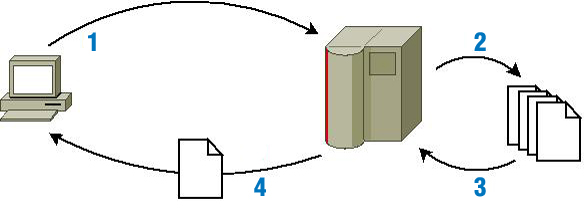

Seguro que ya sabes exactamente qué es una página web, e incluso conozcas cuáles son los pasos que se suceden para que, cuando visitas una web poniendo su dirección en el navegador, la página se descargue a tu equipo y se pueda mostrar. Sin embargo, este procedimiento que puede parecer sencillo, a veces no lo es tanto. Todo depende de cómo se haya hecho esa página.
Cuando una página web se descarga a tu ordenador, su contenido define qué se debe mostrar en pantalla. Este contenido está programado en un lenguaje de marcado, formado por etiquetas, que puede ser HTML, XHTML o HTML5. Las etiquetas que componen la página indican el objetivo de cada una de las partes que la componen. Así, dentro de estos lenguajes hay etiquetas para indicar que un texto es un encabezado, que forma parte de una tabla, o que simplemente es un párrafo de texto.
Además, si la página está bien estructurada, la información que le indica al navegador el estilo con que se debe mostrar cada parte de la página estará almacenado en otro fichero, una hoja de estilos o CSS. La hoja de estilos se encuentra indicada en la página web y el navegador la descarga junto a ésta. En ella nos podemos encontrar, por ejemplo, estilos que indican que el encabezado debe ir con tipo de letra Arial y en color rojo, o que los párrafos deben ir alineados a la izquierda.
Estos dos ficheros se descargan a tu ordenador desde un servidor web como respuesta a una petición. El proceso es el que se refleja en la siguiente figura.

Los pasos son los siguientes:
- Tu ordenador solicita a un servidor web una página con extensión .htm, .html o .xhtml.
- El servidor busca esa página en un almacén de páginas (cada una suele ser un fichero).
- Si el servidor encuentra esa página, la recupera.
- Y por último se la envía al navegador para que éste pueda mostrar su contenido.
Este es un ejemplo típico de una comunicación cliente-servidor. El cliente es el que hace la petición e inicia la comunicación, y el servidor es el que recibe la petición y la atiende. En nuestro caso, el navegador es el cliente web.